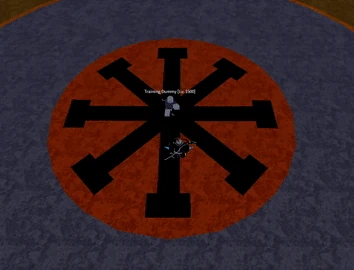

HOME
HOME
Bomb is a Common Natural-type Blox Fruit that costs $80,000 or RB 220 from the Blox Fruit Dealer.
Bomb can be used for grinding in the First Sea due to its low mastery requirements, but it is not recommended as it lacks Elemental Reflex. This fruit can be excellent in PvP when used correctly, as most moves have an extremely large AoE and high knockback. However, it is recommended to use other fruits for grinding in Second and Third Sea due to a lack of mobility.

The user charges a bomb where the cursor is held. Once the Z key is released, the bomb explodes, dealing damage to enemies and launching them into the air. Holding this move allows you to change the direction and deal more damage as you charge the move.
The user dashes forward, and if the user hits an enemy, it will cause an explosion and fling them forward in the user’s direction. This move is similar to Superhuman/Godhuman [C] moves.
The user creates a minefield. The size depends on how long the move is held. If an enemy steps on a land mine, they will be damaged by an explosion. The landmines can only be seen by the user.
If the key is held, the user’s health begins to drain, and they begin charging up an explosion. Upon release of the key, an explosion will occur around the player, dealing immense damage and knockback. Holding longer will cause the move to deal more damage and it can't be cancelled when you take damage. This ability acts like falling into water, but takes less damage. That is, if your Stat fruit is at maximum but your health stat is only 1, when using the move it will still drain your health like falling into water.
The user jumps into the air, creating two explosions while dealing low damage to any enemies caught in them.